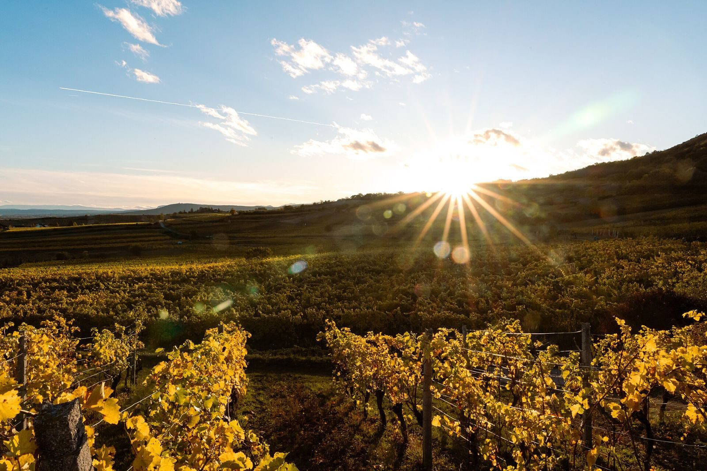

Lefejtettük a kadarkát
Az idei világosabb lett a tavalyinál, és nagyon meggyes. Tavasszal palackozzuk, addig hagyjuk békén.
Szekszárdi borvidék · Iván-völgy
Kadarkát, kékfrankost és bikavért készítünk a szekszárdi löszdombokon, 1994 óta. A borainkat közvetlenül tőlünk rendelheted, palackra vagy kartonra, és a pincében meg is kóstolhatod őket.
Három bor, amely most a legjobb formáját mutatja. Havonta cseréljük, mindig abból, ami a pincében éppen jól áll.
Három sorba rendeztük őket, hogy könnyű legyen választani: mindennapra, vasárnapi ebédhez és a legjobb dűlőinkből. Minden bor száraz, és mind a saját szőlőnkből készül.
Csütörtöktől vasárnapig fogadunk vendégeket, kettőtől tizenhat főig. A kóstolót mindig a család egyik tagja vezeti. Válassz csomagot, és kérj időpontot.
Igen. A gyerekeknek szörpöt adunk, a kutyáknak vizet, az udvar zárt.
A sofőr ingyen jön, szőlőlevet és kávét kap. Szállást a faluban három helyen tudunk ajánlani.
Igen, kóstolóutalványt az ajándékok között találsz. Egy évig érvényes.

Apánk 1994-ben két hektár kadarkával kezdte, mert azt mondta, azt úgysem veszi meg senki, legalább nekünk marad. Ma tizenkét hektáron gazdálkodunk hárman: ő a szőlőben, mi ketten a pincében és a pult mögött.
Szőlőt nem vásárolunk, és bérben sem palackoztatunk. Kézzel szüretelünk, mert a löszdombon a gép amúgy sem állna meg. A vörösek nagy ászokhordóban érnek, az újfahordót csak a két dűlőválogatásnál használjuk, ott is óvatosan.
Nem készítünk tizenkét pontos borokat. Olyanokat készítünk, amelyekből a második pohár is jólesik.
Kőhalmi Anna és Kőhalmi Bencea második nemzedék
| Dűlő | Terület | Talaj | Amit ad |
|---|---|---|---|
| Iván-völgy | 5,2 ha | Lösz, vörösagyag | Kékfrankos, kadarka |
| Porkoláb | 4,1 ha | Mély lösz | Merlot, cabernet franc, a bikavér alapja |
| Baranya-völgy | 2,7 ha | Homokos lösz | Olaszrizling, a rozé és a siller kékfrankosa |
Díszdobozba csomagolva, kísérőkártyával küldjük. Decemberben a 15-ig leadott rendelést visszük ki karácsonyig.
A dobozba kézzel írt kártya kerül, a szöveget a kosárban adhatod meg.
Tíz doboztól egyedi ajánlatot adunk, kérésre a cég logójával ellátott kísérőkártyával. Egy munkanapon belül válaszolunk.
Pár sor arról, mi történik éppen a szőlőben és a pincében.
Az idei világosabb lett a tavalyinál, és nagyon meggyes. Tavasszal palackozzuk, addig hagyjuk békén.
Utoljára a Porkoláb cabernet franc-ja jött be. Huszonhárom nap, egy elromlott prés, nulla eső. Jó év volt.
A 2025-ös elfogyott augusztusra, ezért idén kétszer annyit készítettünk. Hűtve idd, de ne jegesen.
Bort nyitvatartási időben bejelentkezés nélkül is vihetsz. Kóstolóra kérj időpontot, hogy biztosan legyen, aki leül veled.
Új évjáratok, nyitott pincék napja, és ha valamiből már csak pár karton maradt.